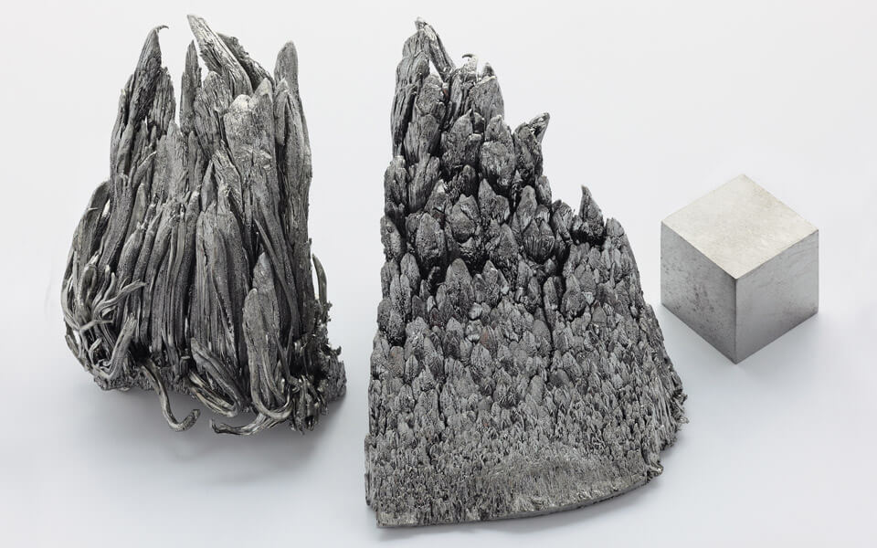
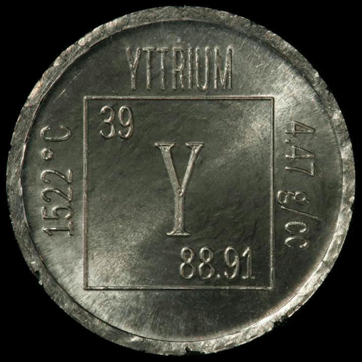

Иттрий
И́ттрий (химический символ — Y, от лат. Yttrium) — химический элемент 3-й группы (по устаревшей классификации — побочной подгруппы третьей группы, IIIB), пятого периода периодической системы химических элементов Д. И. Менделеева, с атомным номером 39.

Иттрий открыл в 1794 г. финский химик Ю. Гадолин в виде оксида. Назван по минералу иттербиту (гадолиниту), найденному около селения Иттербю в Швеции.
Иттрий получают металлотермическим восстановлением безводных галогенидов. Иттрий используют в качестве модификатора сталей и сплавов (например, добавка иттрия к алюминиевым сплавам повышает их прочность, к чёрным и цветным металлам – жаростойкость, пластичность и другие свойства), газопоглотителя в электровакуумных приборах. Оксид Y2O3 используют в качестве компонента специальных стёкол, люминофоров, высокотемпературных сверхпроводников (например, YBa2Cu3O7–x), жаропрочных керамических материалов (например, ZrO2, стабилизированный Y2O3), а также в радиоэлектронике и лазерной технике (иттрийсодержащие гранаты и ферриты).

Перспективными областями применения сплавов иттрия являются авиакосмическая промышленность, атомная техника, автомобилестроение. Очень важно то обстоятельство, что иттрий и его некоторые сплавы не взаимодействуют с расплавленным ураном и плутонием, что позволяет применить их в ядерном газофазном ракетном двигателе.